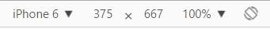
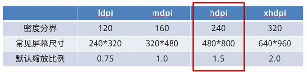

加和不加META的VIEWPORT有什么区别？
小课堂【武汉】
分享人：龚家豪
目录
1.背景介绍
2.知识剖析
3.常见问题
4.解决方案
5.编码实战
6.扩展思考
7.参考文献
8.更多讨论
1.背景介绍
<meta name="viewport" content="width=device-width">
它的意思是调整layout viewport的宽度与ideal viewport相等。起初它是苹果做的一个扩展，但是与此同时被更多的浏览器所借鉴。
像素
- 设备像素/物理像素:设备像素是我们直觉上觉得「靠谱」的像素。这些像素为你所使用的各种设备都提 供了正规的分辨率。
- 设备独立像素(device independent pixels)：（也可以称为设备无关的逻辑像素）
 - CSS像素:是Web编程的概念，指的是CSS样式代码中使用的逻辑像素。
- 每英寸像素(pixel per inch)： ppi，表示每英寸所拥有的像素(pixel)数目，数值越高，代表显示屏能够以越高的密度显示图像。
- 设备像素比(device pixel ratio)： 以上计算出ppi是为了得到密度分界，获得默认缩放比例，即设备像素比。
ppi与dpr对应列表
2.知识剖析
viewport:viewport的功能是用来约束你网站中最顶级包含块元素（containing block）html的。
- visual viewport:是页面当前显示在屏幕上的部分。用户可以通过滚动来改变他所看到的页 面的部分，或者通过缩放来改变visual viewport的大小。无论怎样，CSS布局，尤其是百分 比宽度，是以layout viewport做为参照系来计算的
- layout viewport:整个网页的内容区域
如图所示


ideal viewport
- 为了完美适配visual viewport（完美适配指的是，首先不需要用户缩放和横向滚
动条就能正常的查看网站的所有内容；第二，文字的大小是合适。当然,不只是文字，其他元素
像图片什么的也是这个道理。）这个viewport叫做ideal viewport—移动设备的理想viewport。
-
ideal viewport并没有一个固定的尺寸，不同的设备拥有有不同的ideal viewport。例如iphone5
的ideal viewport宽度是320px。也就是说，在iphone5中，css中的320px就代表iphone屏幕的宽度。
3.常见问题
为什么要写
4.解决方案
5.编码实战
6.扩展思考
方法1.可以使用document.write来动态输出meta viewport标签，例如：
document.write('')
方法2.通过setAttribute来改变
7.参考文献
参考一：Haorooms
参考二：tuicool
8.更多讨论
讨论点一
媒体查询中max-width/min-width是根据什么的宽度来判断的？鸣谢
感谢大家观看
BY : 李仁 | 龚家豪